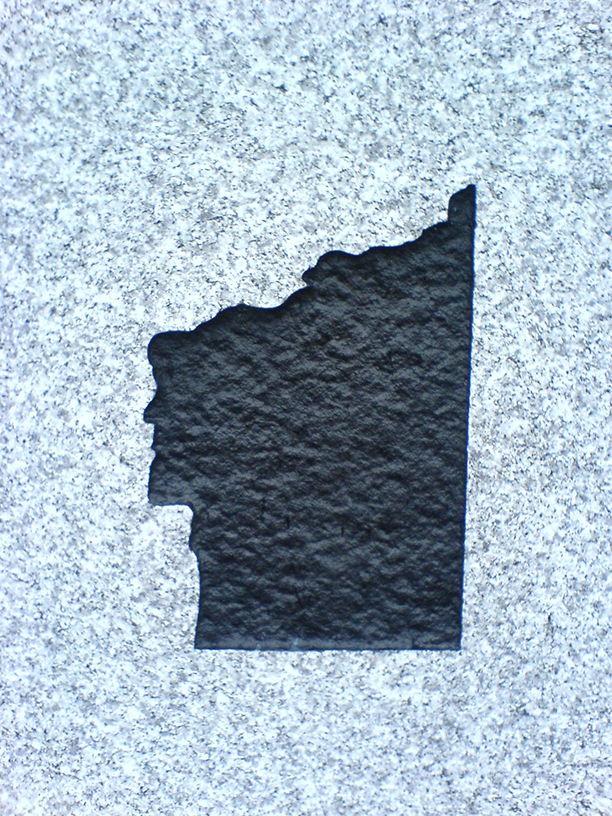
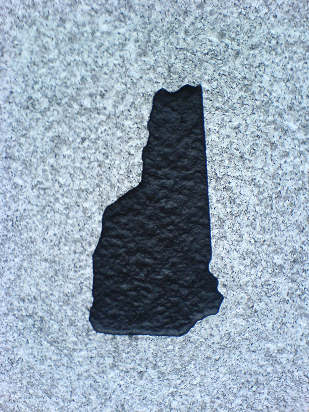

US states are sometimes identified by their shape. The shape becomes an icon for the State. Sometimes one see them on car plates. Some states have a memorable shape, but can it be used as an icon? Wyoming is a rectangle (modulo the Earth’s curvature), but so many other things are rectangular (starting with Wyoming’s, and almost anybody else’s, flag.) Insular or peninsular States all over the world have extremely vivid shapes: Great Britain, Japan, Australia, and Italy are easily iconizable. Do you remember the shape of Ukraine? Of Congo?
Image Credit: RC.
New Hampshire’s elongated shape makes for a poor icon. By tradition, the icon is instead the vivid profile of the Old Man of the Mountain. Sadly, the pile of rocks that created the profile collapsed in 2003. Out of affection for the profile, plates and other official symbols still bear the image of the Old Man. Some public offices are undecided about what icon to use. As a result, they end up using both. The message is, to say, the least, hard to understand. The profile looks like a State. And the State does not look like anything in particular.
  Image Credit: RC.